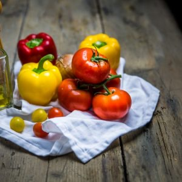

Recette de la Frita

Bonjour tout le monde! Aujourd’hui j’ai décidé de partager avec vous une recette pied-noir , il s’agit de la recette de la Frita. Vous allez voir qu’ici rien n’est très compliqué, quelques poivrons, quelques tomates et une pointe de soleil et le tour est joué! La Frita est un délicieux mélange de légumes mijotés (poivrons et tomates) et il en existe plusieurs versions (notamment avec ou sans oignons; avec ou sans thym) Généralement on y met des poivrons rouges et des poivrons verts cependant, j’ai fait le choix de ne pas mettre des poivrons verts mais des jaunes tout simplement parce que visuellement c’est beaucoup plus joli et que ça nous rappelle davantage le ☼ soleil ☼ que nous apporte cette recette!
La frita peut se manger de différentes façons , sur du pain grillé en apéro , sur une pâte à pizza, avec des œufs , en garniture pour la coca à la frita (petit chaussons fourrés à la frita) ou tout simplement telle quelle. je fais souvent le choix de rajouter un gousse d’ail en fin de cuisson mais la aussi ce n’est pas dans la recette « traditionnelle » Je vous laisse découvrir tout ça et je vous dis à très vite!
Ingrédients
- Tomates - 350 g
- Poivrons rouges - 2
- Poivrons jaunes - 2
- Oignons - 2
- Huile d'olive
- sel
- poivre
- Facultatif : ail - 1 gousse
- Facultatif : persil - quelques brins
Instructions
- Peler les poivrons et coupez-les en fines lanières
- Couper les oignons
- Faire revenir poivrons et oignons dans une poêle avec un peu d'huile d'olive
- Pendant ce temps peler les tomates (pour le cela, il faut les monder : faire une entaille en forme de croix à la base des tomates et les plonger 30sec dans l'eau bouillante , la peau se détachera très facilement)
- Une fois les tomates pelées et épépinées , coupez-les en petits morceaux
- Rajouter les tomates aux poivrons
- Laissez mijoter sur feu doux environ 1h en remuant de temps en temps
- En fin de cuisson vous pouvez ajouter une gousse d'ail ainsi que quelques brins de persil ciselés
Les tips de la communauté
Recette traditionnelle pleine de nostalgie pour les pieds-noirs et ceux ayant des souvenirs d'Algérie/Maroc. Bien reçue avec suggestions de variantes régionales (avec viande, épices). L'auteure partage aussi ce lien culturel.
Astuces
- Peler les poivrons pour meilleur rendu (optionnel mais recommandé)
- Se fait aussi froide l'été
- Laisser mijoter une heure après avoir cuisiné la viande
Variantes suggérées
- Avec rognonnade d'agneau
- Avec poulet
- Version marocaine avec ail écrasé et tomates pelées